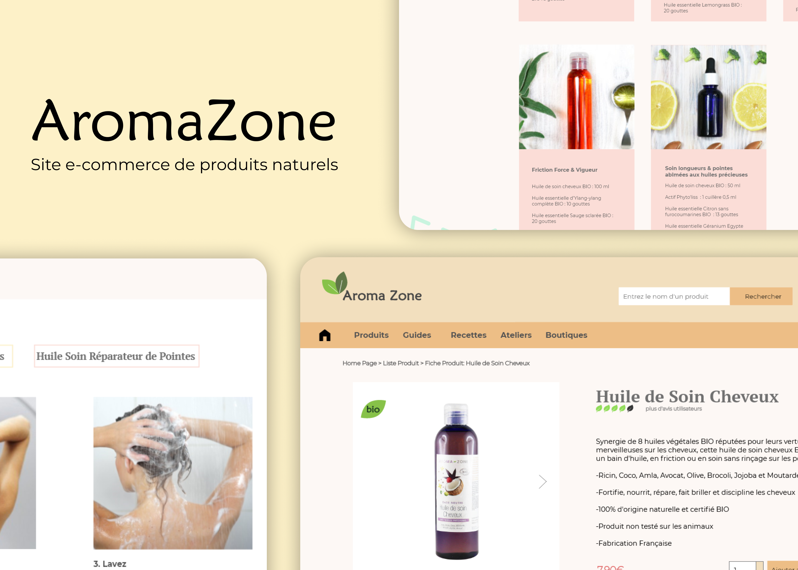
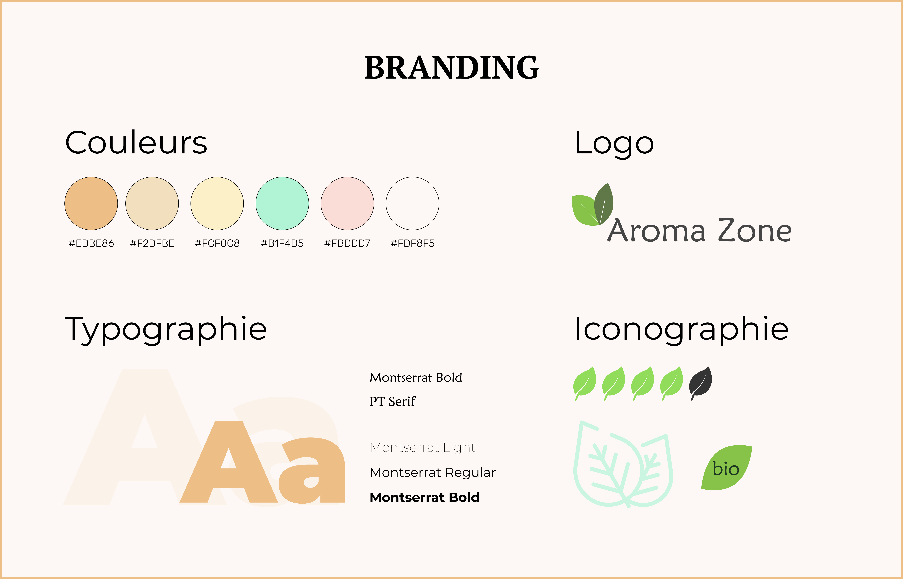
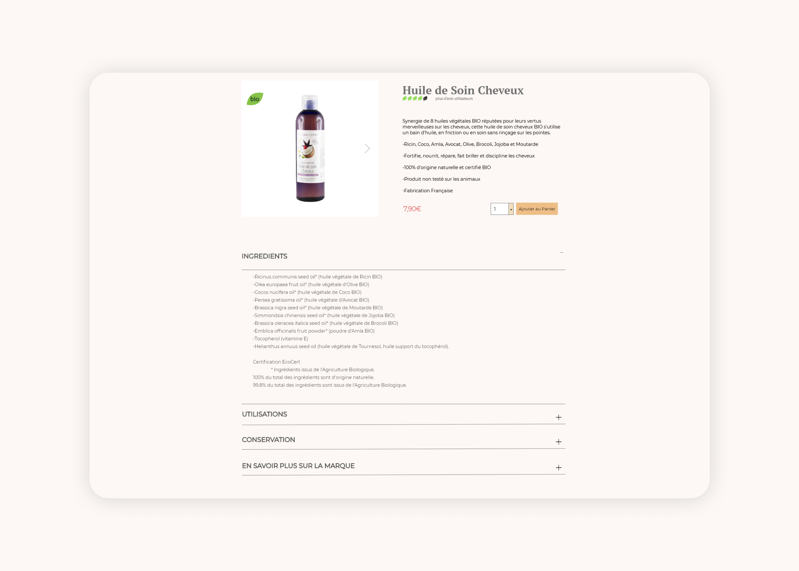
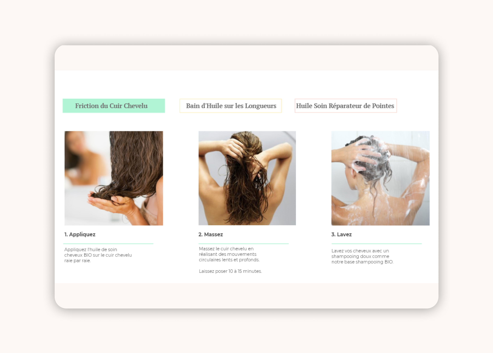
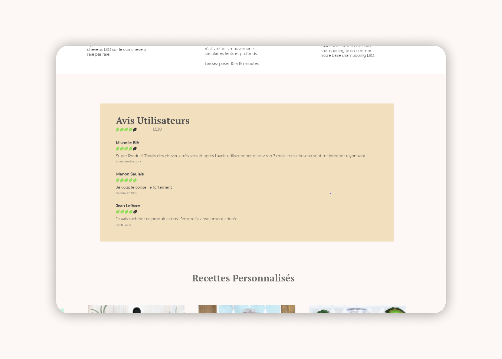
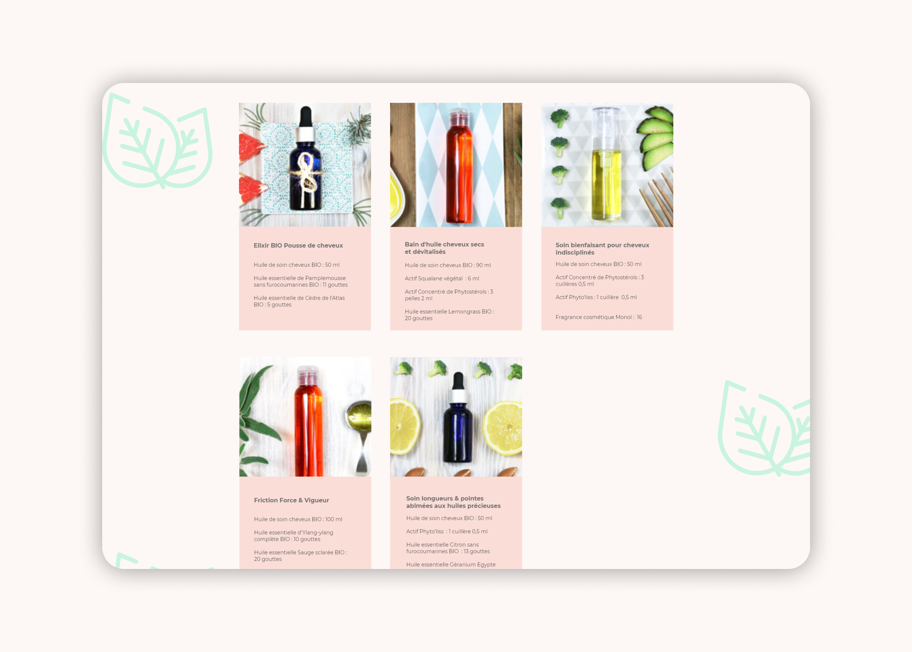

AromaZone
Refonte Page Produit
Le brief était de faire une refonte des fiches produits du site d'AromaZone, un site e-commerce de produits de beauté naturels.
Phase de Recherche : User Experience (UX)
J’ai tout d’abord réalisé un audit heuristique du site actuel pour identifier ses points forts et ses points faibles et ai constaté que la fiche produit était trop chargée en informations. En effet, certaines informations qui ne sont pas spécifiques au produit sélectionné (par ex : les informations relatives à l’application d'huile) se retrouvent sur chaque fiche produit « huiles »).Toutes les informations sont déroulées par défaut alors qu’elles ne sont pas forcément utiles. Pour rendre la fiche produit plus lisible, j’ai caché certaines informations dans des menus déroulants et/ou des onglets, ainsi, toutes les informations restent disponibles mais ne viennent pas polluer visuellement la fiche produit. Pour accéder aux informations complémentaires, il suffit de cliquer sur les onglets ou sur le menu déroulant. Pour une meilleure ergonomie, j'ai mis le site en Full-screen car le contenu du site n’était affiché que sur une partie de l'écran devant une image de fond distrayante.
Conception Graphique - User Interface (UI)
Charte Graphique
Une fois la phase de recherche terminée, j'ai créé une charte graphique contenant la police, la palette de couleurs et le logo choisis. Le site d'AromaZone propose des produits bio, ce qui ne se voit pas forcément dans leur palette de couleurs, j’ai donc décidé de choisir des couleurs pastel pour un côté plus naturel. Le logo a également été modifié pour apporter une touche de nature grâce aux feuilles.
Maquettes Graphiques
Détails Produit
Une fiche produit doit être claire et concise pour que l'utilisateur puisse rapidement trouver les informations dont il a besoin, telles que le prix, la description du produit, sa disponibilité et les avis d’autres utilisateurs. J'ai donc décidé de mettre toutes ces informations, en quelques lignes, à droite de la photo du produit afin que l'utilisateur puisse lire le contenu facilement. J'ai fait le choix de cacher les informations détaillées des ingrédients et de la conservation dans des champs déroulants. Le bio étant une valeur importante de la marque AromaZone, j'ai décidé de créer un logo spécifique pour identifier les produits bio ( ce logo apparaît sur la photo des produits qui sont bio), ainsi, les utilisateurs peuvent voir en un coup d'œil si un produit est bio ou pas.
Utilisation
Les informations d'utilisation du produit sont importantes mais trop nombreuses au premier regard, j’ai donc décidé de les mettre derrière des onglets. Les icônes utilisées pour montrer comment utiliser chaque produit sur le site AromaZone ne sont pas agréables visuellement, je les ai donc remplacées par des photographies.
Avis Utilisateurs
Pour un site, il est important d'avoir une charte graphique propre pour se démarquer. J'ai décidé dans mes recherches que « la feuille » serait un bon visuel pour une marque de produits naturels. Ainsi, j'ai utilisé des feuilles dans le logo, dans le bio mais aussi dans les avis et ai donc remplacé les étoiles habituelles et trop communes par des feuilles plus Graphiques.
Recettes Personnalisées
Produits Associés